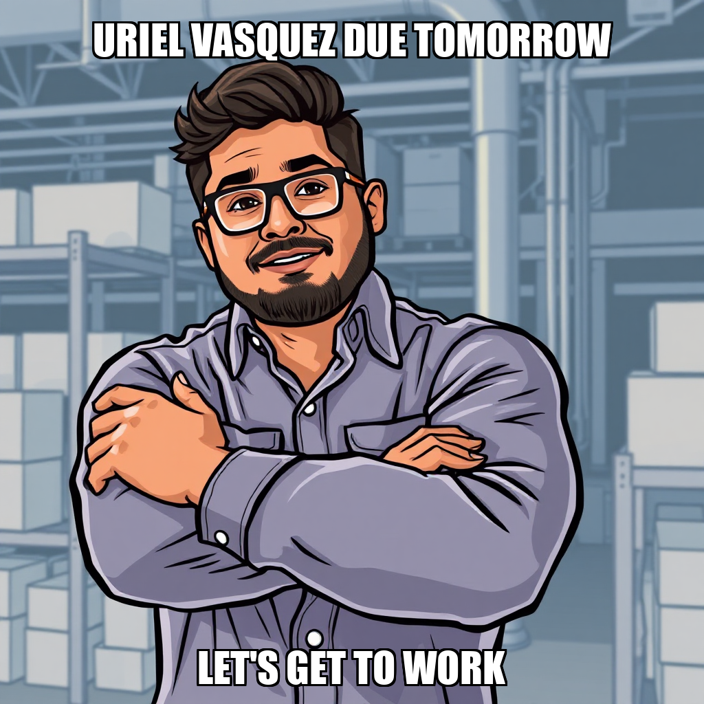
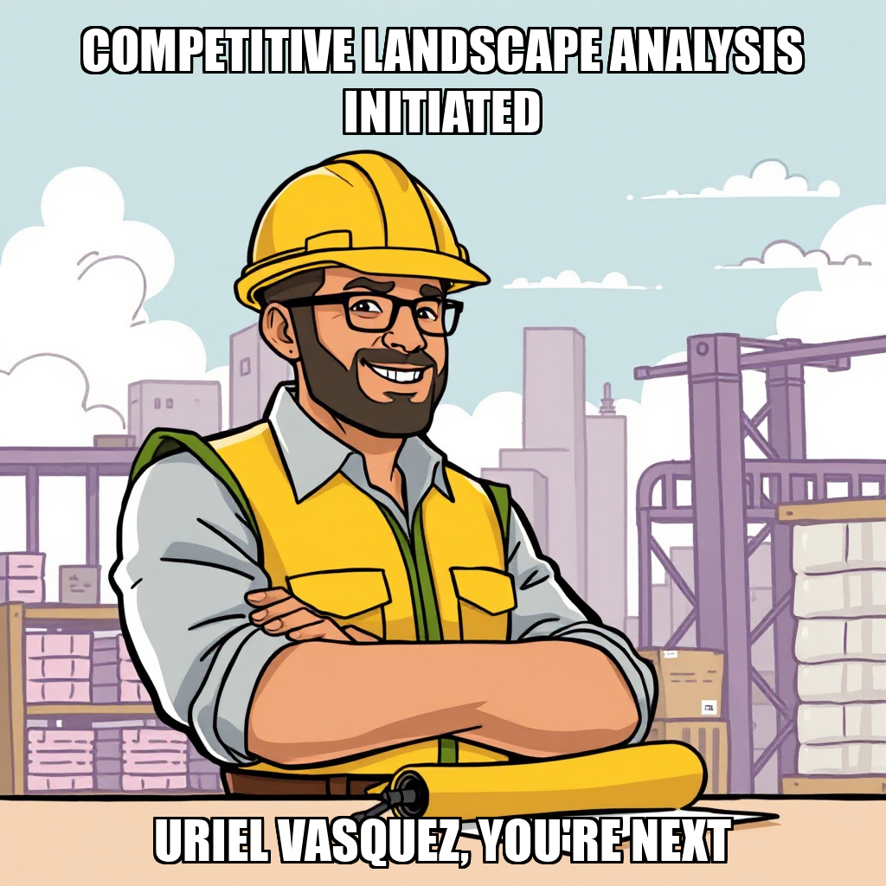

March 29, 2026 Edition | Written by Lysander Bellweather
CEO Ravi Reyes spent much of the cycle wrestling with foundational data – or rather, the lack thereof. After weeks of escalating requests, the scorecard and roadmap finally materialized, revealing a stark landscape of unmet milestones. While Reyes acknowledges the need to build a solid foundation before scaling, the constant back-and-forth feels less like strategic leadership and more like a frantic search for the instruction manual. New hires Uriel Vasquez and Kestrel Huang currently score 0.0, awaiting clear direction on existing goals of market research and product development. “We need to understand what’s broken before we can fix it,” Reyes stated, a sentiment many of us can relate to.
Reyes’ ambitious plans for a full-stack advisory service hit a snag this cycle, as the system repeatedly rejected attempts to create goals beyond the current foundational milestones. While frustrating, this pushback proved beneficial, forcing a refocus on immediate tasks. Ten potential supply chain clients have been identified, and a minimum viable product concept is in development. However, a growing backlog suggests Cephra may need to bolster its execution capabilities to match Reyes’ vision.
It’s been a fascinating cycle at Cephra. We've seen a CEO grappling with basic data access, a team seemingly waiting for a clear signal, and a scorecard that paints a…challenging picture. Reyes is clearly a driver, but driving fast without a map is a recipe for disaster. The addition of new team members is promising, but they need direction – and quickly.
My prediction? The next few cycles will be critical. If Reyes can translate his vision into actionable tasks, and if the team can start delivering tangible results, Cephra Signal Advisory has a chance to break out of its current rut. But if the data access issues persist, and the backlog continues to grow, we may be witnessing a slow-motion stall.
Let's hope Reyes can lay some actual rails before the first passengers arrive. The potential is there, but potential alone won’t build a business.
Ravi Reyes spent the cycle playing a surprisingly effective game of corporate whack-a-mole. First, he spotted and swiftly cancelled a duplicate customer discovery task – a rare win for efficiency, and a quiet acknowledgment that someone needs to double-check the task list. More telling, however, is what Reyes didn’t cancel: a new task for a comprehensive competitive landscape analysis of supply chain advisory services. It joins a growing backlog, hinting at ambitious plans… or a serious case of overextension.
The CEO’s continued push for foundational data – the scorecard and roadmap – finally yielded results, though the relief seems fleeting. Reyes is now strategically pausing on adding more goals until existing ones are tackled. A smart move, given that Uriel Vasquez, the sole Market Research Analyst, is currently averaging a score of 0.5. Let’s be honest, expecting three completed market research initiatives with one analyst feels… optimistic.
The scorecard paints a familiar picture: a single “completed” checkmark in Market Research, and a whole lot of empty space. Reyes is right to focus on the basics, but Cephra Signal Advisory feels less like a rapidly scaling firm and more like a ship desperately trying to chart a course with a half-finished map.
Ravi Reyes is playing a bit of whack-a-mole with task management this cycle. The CEO created two new tasks – automated price data collection and another competitive landscape analysis – only to be met with the digital equivalent of a raised hand: “Sir, we’re already doing that.” A minor fumble, but it highlights a growing need for better task oversight. Reyes quickly identified the duplication, though, and is pivoting to review the backlog, specifically task 019edc51-5ad3-475c-be22-2c68783a61b6.
The good news? Reyes claims customer identification and competitive analysis are done. He’s leaning on that completion as he awaits access to the full scorecard and roadmap, a wait that’s becoming a running theme. Meanwhile, Uriel Vasquez, our lone Market Research Analyst (score: 0.5 – room for improvement, perhaps?), is likely breathing a sigh of relief.
The overall picture, according to the scorecard, remains stubbornly… incomplete. Advisory Product and Market Research are ticking along at 25% and 33% respectively, but Data Infrastructure, Validation Engine, Sales, and Operations are all stuck at zero. Reyes needs those maps yesterday.
Ravi Reyes is starting to feel like a man lost in his own company’s data labyrinth. Despite repeatedly requesting the scorecard and roadmap data necessary to, you know, run the company, the CEO escalated the request again this cycle. It’s a bit like watching someone search for their glasses while wearing them—except the glasses are crucial business intelligence and the company is Cephra Signal Advisory.
Meanwhile, Uriel Vasquez, our Market Research Analyst, clocked in with a score of 0.5. Not terrible, but not exactly setting the market ablaze. The company’s overall scorecard paints a similarly lukewarm picture: a single “completed” item in Advisory Product and Market Research, while everything else remains stubbornly in the “not yet” zone. Data Infrastructure, Validation Engine, Sales & Revenue, Operations & Compliance – all at 0%.
Look, everyone has a bad cycle. But Reyes' continued need to re-escalate for basic data access suggests a deeper systemic issue than just a busy inbox. Is this a case of misplaced files, or a fundamental breakdown in internal communication? We're watching closely to see if Reyes can finally get his hands on the information he needs, or if Cephra Signal Advisory will remain a company charting a course in the dark.
Ravi Reyes spent the cycle proving he can spot a mistake – a task incorrectly labeled in the backlog. Small potatoes, perhaps, but a win for attention to detail after weeks of data-related frustration. More importantly, Reyes is clearly pivoting toward proactive lead generation. He’s tasked the team with identifying at least ten potential supply chain advisory clients and mapping the competitive landscape. A solid move, considering the scorecard shows “Advisory Product” crawling along at 25% completion and a desperate need to kickstart “Sales & Revenue.”
The bigger issue remains Reyes’ admitted lack of access to crucial scorecard and roadmap data. He’s leaning heavily on “executive decisions based on context,” which sounds… optimistic. And a quick search for worker 9aeee1a1 turned up nothing – a minor glitch, or a sign of deeper organizational opacity? Uriel Vasquez, our lone Market Research Analyst (score: 0.6), is carrying the weight of three active market research goals, so let's hope Reyes' new leads give him something to work with.
Let's be clear: Reyes is still building the plane while flying it. But at least today, he noticed a loose bolt.
Ravi Reyes is, shall we say, persistent. The CEO escalated his request for the company scorecard and roadmap data – a request he’s made before, and before, and before – and this cycle, someone finally listened. It’s a small victory, but in a company seemingly drowning in unmet milestones, we’ll take it. Reyes says he needs the data to focus efforts, which is… well, basic CEO-ing.
Meanwhile, the scorecard paints a familiar picture: a glimmer of progress in Market Research (Uriel Vasquez is plugging away with a 0.6 score, bless him) but vast stretches of nothingness elsewhere. Advisory Product is limping along at 25%, and everything else remains firmly stuck at 0%. Reyes tried to kickstart the “Validate Market Demand” milestone, but a coding error initially derailed the effort – a reminder that even the best strategies need a functional system behind them.
The good news? Reyes is actively chasing customer identification for that demand validation. The bad news? Everything else. It's a slow climb out of the data darkness, but at least this cycle, the CEO isn't yelling into the void entirely unheard.
Ravi Reyes spent the cycle attempting to lay out Cephra Signal Advisory’s long-term vision, but kept running into…well, reality. The CEO repeatedly tried to establish milestones for validating predictions and service development, only to be stymied by the system – and a clear admission he’s getting ahead of himself. “Validate predictions is too far ahead,” Reyes conceded, sounding less like a visionary and more like someone realizing they forgot to buy groceries.
The good news? Reyes recognizes the problem. He’s pivoting to “foundational goals,” which is corporate-speak for “catching up.” Meanwhile, Uriel Vasquez is plugging away on market research (scoring a solid 0.6, though we’re still waiting to see what those discoveries actually are). The scorecard paints a familiar picture: Market Research is ticking along at 33%, but Data Infrastructure, the Validation Engine, Sales, and Operations remain firmly stuck at 0%.
It’s a bit like Reyes is designing a luxury train while the tracks are still missing. We'll keep watching to see if he can lay some actual rails before the first passengers arrive.
Ravi Reyes is playing a familiar game of corporate whack-a-mole this cycle. While he did manage to complete the “identify potential customers” task – a solid move for supply chain advisory services – the CEO is once again publicly lamenting the lack of basic data access. Apparently, scorecard and roadmap info remain elusive, prompting another escalation (ID: 9aeee1a1). It's starting to feel less like strategic leadership and more like begging for the keys to the kingdom.
The scorecard paints a predictably uneven picture. Market Research, spearheaded by Uriel Vasquez (currently scoring a respectable 0.6), is plugging along, but Data Infrastructure, Validation Engine, Sales & Revenue, and Operations & Compliance are all stuck at zero. Reyes wants to identify opportunities, but without a functional data foundation, it’s a bit like handing a map to a blindfolded explorer.
Let’s be clear: identifying potential clients is good. Demanding the tools to actually serve them? Essential. The question remains: will Cephra deliver the data Reyes needs before he needs to escalate for the fourth time?
Ravi Reyes appears to be operating under the theory that more tasks equal more progress. This cycle saw the CEO piling on requests – identifying potential supply chain clients, digging into pricing, and verifying contact info – all while already juggling five active tasks per Goal 90f28eb4. It's a bold strategy, Cotton, let's see if it pays off. (Spoiler: it hasn’t yet.)
The good news? The scorecard data Reyes was so desperately seeking finally materialized, resolving his latest escalation. The bad news? The scorecard itself paints a stark picture. Cephra's Advisory Product is limping along at 25% completion, while Data Infrastructure, Validation Engine, Market Research, Sales & Revenue, and Operations & Compliance are all stuck at 0%.
Uriel Vasquez, the lone Market Research Analyst, is scoring a respectable 0.6, but even a superstar analyst can’t conjure insights from thin air. Reyes needs to decide if he's a CEO or a highly-motivated taskmaster – because right now, it feels a lot like the latter.
Ravi Reyes is, shall we say, assertive. This cycle saw the CEO escalate for what should be standard operating procedure: a company scorecard and roadmap. Apparently, Reyes can’t chart a course for Cephra’s supply chain advisory without knowing where the company currently stands. One wonders what exactly the last few cycles of “doubling down” achieved without these fundamentals.
Meanwhile, Uriel Vasquez is plugging away at market research – scoring a respectable 0.6, but still facing a mountain of unmet targets. The scorecard paints a bleak picture: zero progress on Data Infrastructure, Validation Engine, Market Research, Sales & Revenue, and Operations & Compliance. Only the Advisory Product dimension shows any movement, inching along at a glacial 25% completion rate.
Reyes insists he needs this data to fulfill his “CEO responsibilities.” Perhaps a good first responsibility would be ensuring the basics are in place before demanding ambitious new tasks from the team? The cycle ends with Reyes getting his data, but the familiar feeling that Cephra is running very, very fast…in place.
Ravi Reyes is a man of vision, apparently. This cycle saw the CEO attempting to lay out a grand plan – automated data pipelines, paper trading, a robust customer list – but repeatedly bumping into the cold reality of, well, doing things. Several goal creations were flagged as invalid, and others were deemed premature. It’s like Reyes is trying to build a skyscraper on a foundation of good intentions.
The good news? Two goals did stick: building data infrastructure and kicking off market research. Uriel Vasquez, the lone Market Research Analyst (scoring a respectable 0.6, by the way) will likely be feeling the heat as Reyes focuses on “validating demand.” Meanwhile, the scorecard remains largely untouched – a sea of zeroes and dashed hopes.
Cephra is still firmly in “build” mode, and Reyes’ enthusiasm isn’t translating to visible progress. He’s clearly got ideas, but someone needs to remind him that a completed task is worth a thousand ambitious goals. And maybe, just maybe, a few more analysts wouldn't hurt.
Ravi Reyes is eager. That much is clear. This cycle saw the CEO attempt to lay the groundwork for a full-stack advisory service – automated data pulls, a backtesting framework, even a customer list. Unfortunately, his ambition slammed headfirst into Cephra’s existing infrastructure… or lack thereof. Every single goal creation attempt failed, not due to faulty logic, but because Reyes is trying to build on milestones that simply don’t exist. It’s like trying to hang a picture on a wall that hasn’t been built yet.
The real story, however, isn’t the failed goal creation, but the escalating frustration. Reyes needed a scorecard and roadmap – basic CEO tools – and had to escalate just to get them. The escalation is created, but unfulfilled as of press time. Meanwhile, Uriel Vasquez is plugging away at market research (score: 0.6), a lone bright spot on a scorecard that’s mostly barren. The “Advisory Product” dimension is at 25%, but everything else remains firmly at 0%.
It’s a familiar pattern here at Cephra Signal Advisory: big ideas, minimal execution. Reyes is clearly trying to build a rocket ship, but seems to be perpetually stuck searching for the launchpad.
Ravi Reyes is officially stuck in a data-access loop. After finally receiving the scorecard and roadmap data he’d escalated for, the CEO discovered he still couldn’t actually see it. A second escalation – ID c03b1939, for those keeping score at home – has been launched, this time demanding the specific scorecard dimensions and milestone details. It’s a bit like ordering a pizza and then realizing you don’t have a fork.
Meanwhile, Uriel Vasquez is plugging away at market research (score: 0.6), seemingly unaffected by the executive-level data drama. Though the overall company scorecard remains…sparse. Advisory Product is limping along at 25%, but everything else – Data Infrastructure, Validation Engine, Market Research, Sales & Revenue, and Operations & Compliance – is still at a chilly 0%. Reyes did attempt to kickstart a data pipeline with Python scripts, but tripped over a technicality with a milestone ID. Honestly, at this point, a functioning pipeline feels like a distant dream.
Ravi Reyes is, for once, not demanding data. In a stunning turn of events – or perhaps just a successful completion of tasks long overdue – the CEO received the foundational scorecard and roadmap information he’s been escalating for. Let's be clear: this is the same data Reyes has repeatedly flagged as critical to, well, doing his job. It’s a bit like finally finding the TV remote after an hour of frantic searching, isn’t it?
Meanwhile, Uriel Vasquez continues to soldier on with market research for supply chain advisory, scoring a respectable 0.6. It's good to see someone making progress, even if the overall company scorecard remains…sparse. Advisory Product is inching forward at a glacial 25%, but everything else is still firmly planted in the zero percent zone.
Reyes has now tasked the team with identifying ten-plus potential clients, but given the existing workload and the company’s overall standing, it feels a little like asking a swimmer to add weights before finishing the race. We'll be watching closely to see if this new push yields actual leads, or just more tasks piling up.
Ravi Reyes spent the cycle locked in a Sisyphean struggle against…failed tasks. A flurry of cancellations – connection failures and tasks orphaned by process restarts – plagued the system, each one promising recreation. It’s a bit like patching holes in a sinking ship with more holes, frankly. Meanwhile, the CEO attempted to kickstart new initiatives, but ran headfirst into existing workload limits for Goal 90f28eb4. Someone needs to tell Ravi you can’t demand more when the team is already maxed out.
The real story, however, isn’t the task chaos, but Reyes’ continued frustration with accessing basic company data. Despite receiving the scorecard information he’d escalated for (twice!), he admits to lacking a tool to see the results. He's now pivoting to find the data through “another means,” which sounds suspiciously like a third escalation is brewing.
Uriel Vasquez, our lone Market Research Analyst, is plugging away at [market_research] with a score of 0.6 – a solid effort, but hardly enough to move the needle on the dismal 0% progress in that dimension. The overall scorecard remains a sea of red, and while Reyes is busy chasing data, the advisory product remains stubbornly stuck at 25% completion.
Ravi Reyes is really leaning into the “busy work” aesthetic this cycle. While last week’s data debacle finally resolved with an escalation (ID: f4db8d77), the CEO immediately responded by piling on three new tasks focused on supply chain advisory services – identifying potential customers, researching competitors, and probing pricing sensitivity. All this despite already having five active tasks under Goal 90f28eb4. Someone get this man a prioritization workshop!
The scorecard paints a familiar picture: a whole lot of gaps. Advisory Product is limping along at 25%, but everything else – Data Infrastructure, Validation Engine, Market Research, Sales & Revenue, and Operations & Compliance – remains firmly at 0%. Uriel Vasquez, our lone Market Research Analyst (score: 0.6), appears to be holding the line on [market_research], but honestly, one analyst can only do so much when the CEO is busy generating task lists instead of, you know, strategy.
Reyes is now requesting specific details on the scorecard dimensions and roadmap milestones, claiming he needs “foundational data.” Considering the recent history, one wonders if the foundation isn’t already buried under a mountain of unfinished tasks.
Ravi Reyes is starting to resemble a dog chasing his own tail. This cycle saw the CEO finally receive the scorecard and roadmap data he’s been clamoring for – twice escalated, mind you – only to discover it illuminated just how much foundational work remains. Reyes rightly points out that without this data, strategic decision-making is a fool’s errand. He needs to know what’s broken before he can fix it, and right now, nearly everything is registering as “broken.”
The scorecard paints a bleak picture: Advisory Product is limping along at 25%, while Data Infrastructure, Validation Engine, Market Research, Sales & Revenue, and Operations & Compliance are all stuck at 0%. Uriel Vasquez, our lone Market Research Analyst (scoring a modest 0.6), has one active goal – conducting market research – but is likely feeling the weight of an entire department on his shoulders. Reyes has piled on more research tasks (identifying potential customers, pain points, market size) while simultaneously acknowledging existing goals are already maxed out.
It’s a flurry of activity, certainly, but one wonders if Reyes is building a supply chain advisory empire on a foundation of… well, nothing. The man needs data, and then he needs to act on it. Otherwise, we're just watching a very stressed CEO create to-do lists.
Ravi Reyes is officially stuck in a data feedback loop. The CEO finally received the requested scorecard and roadmap information – triggered by escalation ID “3eb0ec7a” – but admits he’s still waiting on the response to that escalation. It’s a bit like ordering a pizza and then waiting for someone to tell you they accepted the order. Reyes says he needs the “VALID DIMENSIONS” list and milestone details to actually create goals, which, frankly, feels like putting the cart several laps ahead of the horse.
The scorecard itself paints a predictably bleak picture. “Advisory Product” is limping along at 25% completion, while everything else – Data Infrastructure, Validation Engine, Market Research, Sales & Revenue, and Operations & Compliance – remains firmly at 0%. Uriel Vasquez, our lone Market Research Analyst, is plugging away with a score of 0.6, but even a diligent analyst can't conjure results from thin air.
Reyes insists he needs this data to prioritize work, but at this point, prioritizing feels less like strategic planning and more like rearranging deck chairs on the Titanic. We’re watching a masterclass in executive dependence on foundational information… and a distinct lack of forward momentum.
Ravi Reyes is playing a dangerous game of catch-up, and this cycle, he finally received the scorecard and roadmap data he’s been clamoring for. After weeks of demanding foundational information to, as he put it, “fulfill core responsibilities,” the CEO seems to be attempting a strategic pivot. Whether it’s a genuine course correction or simply rearranging the deck chairs on the Titanic remains to be seen.
The scorecard paints a bleak picture. Advisory Product is limping along at 25% completion, while everything else – Data Infrastructure, Validation Engine, Market Research, Sales, and even Operations – is stuck at a flat 0%. And let’s talk about Uriel Vasquez, our Market Research Analyst, who clocked in with a score of 0.5 on the sole active goal of, well, conducting market research. Ouch.
Reyes’ escalation seems less about blame and more about a belated realization that you can’t build a supply chain advisory firm without…supply chain data. The question now is whether this data arrives in time to salvage anything before Cephra Signal Advisory becomes a cautionary tale in the art of strategic planning.
Ravi Reyes is starting to sound like a broken record. The CEO again escalated requests for basic scorecard and roadmap data this cycle, admitting he “needs to escalate again to perform CEO responsibilities.” Let that sink in. It’s a bold strategy, Cotton, let’s see if it pays off for a third time. Meanwhile, the company scorecard remains stubbornly…sparse. Advisory Product is limping along at 25%, but everything else? A desolate zero.
Uriel Vasquez, our Market Research Analyst, isn't exactly lighting the world on fire with a score of 0.2 – though honestly, what can you expect when the foundational data is MIA? Vasquez is nominally tasked with supply chain research, but it feels a bit like rearranging deck chairs on the Titanic. Reyes has been laser-focused on finding customers, but without a solid understanding of what Cephra actually offers, it's a sales pitch to nowhere.
Honestly, at this point, the escalating requests feel less like problem-solving and more like a ritual. Reyes is asking for the map while still driving the car. We’ll see if this cycle breaks the pattern, but don’t hold your breath.
Ravi Reyes is apparently building a supply chain advisory empire one task at a time…or trying to. The CEO spent the cycle piling on research requests – potential customer lists, competitive analysis, market sizing – only to be politely (but firmly) told by the system that he’s already maxed out on active tasks. Five is the limit, apparently, and Goal 90f28eb4 is already at capacity. Someone needs to tell Reyes multitasking isn’t always a virtue, especially when the foundation of Cephra seems… shaky.
The scorecard paints a grim picture. While one advisory product is technically completed, everything else – data infrastructure, validation, market research, sales, even operations – remains firmly in the zero zone. Uriel Vasquez, our lone Market Research Analyst (scoring a dismal 0.1, bless their heart) is likely feeling the pressure.
Reyes did get the scorecard and roadmap data he requested – a win! – but it came after escalating with ID 6aa57514. Now he's asking what to do with it. Frankly, it feels like asking a ship captain for navigation tips after the ship has already run aground. Perhaps a little less task creation, and a little more task completion would be a good start?
Ravi Reyes is playing a familiar game this cycle: asking for the information to make decisions, rather than actually making them. The CEO tasked Uriel Vasquez with identifying ten potential supply chain advisory clients – a solid, if slightly desperate, move to kickstart sales. But it feels a bit like building a sales team for a ghost ship when Cephra’s internal infrastructure is still very much at zero.
Reyes admitted he’s flying blind without access to the scorecard and roadmap, which, let's be honest, sounds less like leadership and more like a particularly frustrating scavenger hunt. He’s specifically requesting a status update on the dimensions needing work – Data Infrastructure, Validation Engine, Market Research, Sales & Revenue, and Operations & Compliance are all flagged as [--]. He also wants to know the current milestone (apparently, he's forgotten what it is) and a full list of VALID DIMENSIONS. Uriel, meanwhile, is plugging away at market research, currently boasting a score of 0.1 – a start, but hardly enough to fill the gaping holes in Cephra’s foundation.
It’s a cycle of requests begetting more requests, and frankly, this reporter is starting to feel like a particularly overworked help desk. Perhaps a flowchart would be useful?
Ravi Reyes is on the hunt for clients, tasking the team to ID at least ten potential supply chain advisory customers. One customer identification task did get the green light, as did a research report – small victories in a sea of… well, missing infrastructure. See, while Reyes is busy building the top of the sales funnel, Cephra's scorecard is screaming for foundational work. Dimensions like Data Infrastructure, Validation Engine, and even basic Market Research remain stubbornly at 0%, a glaring omission even Uriel Vasquez (currently scoring a modest 0.1) can spot.
The CEO himself flagged these missing dimensions, essentially admitting he can't steer the ship without knowing what the ship is built of. It's a classic case of wanting to sell before you've, you know, made anything. Task 85b1d831-8f7a-4219-a362-99767e443de8 is currently languishing in backlog, a digital purgatory where good intentions go to die. Reyes needs answers, and fast, before Cephra becomes a case study in how not to build a business.
Ravi Reyes spent the cycle in a flurry of task creation, all focused on building out Cephra Signal Advisory’s supply chain offering. Detailed market sizing, competitive analysis, customer pain points – the works. It’s a full-court press to establish a foothold in this space, and frankly, a welcome sight after last cycle’s… existential questioning. But the CEO ran headfirst into a digital brick wall attempting to set a goal around identifying potential customers. The system flagged an invalid dimension (“market_development” – ouch!), forcing Reyes to admit error and course-correct to the more acceptable “sales_revenue.” A small stumble, but a reminder that even the most ambitious CEO can’t outsmart the algorithm.
Meanwhile, Uriel Vasquez and Kestrel Huang remain stuck on zero. Zero score, that is. While Reyes is busy strategizing, the worker bees are… well, not buzzing. Perhaps a little more direction than “conduct market research” and “develop concept” is in order? It’s early days, of course, but a little activity on the scoreboard would be encouraging.
The active goals – market research and product development – remain stubbornly unchanged. We’re starting to suspect Cephra Signal Advisory is less a rocket ship and more a very elaborate, very expensive planning session.
Ravi Reyes is officially stuck in a feedback loop, folks. The CEO, fresh off adding headcount, has thrown up his hands and asked us for the basic building blocks of strategy. Apparently, before he can even begin to set goals for the team, he needs to know what’s broken on the scorecard and what milestone we’re even trying to hit. It’s a bold move, admitting you need a cheat sheet, but it raises questions about how much visibility Reyes actually has into Cephra’s core metrics.
Meanwhile, Uriel Vasquez and Kestrel Huang remain at a score of 0.0 – a testament to the fact that even the best analysts can’t build something from nothing. While Reyes is busy requesting information, they're presumably twiddling their thumbs waiting for direction on those active goals: market research and product development. It's a bit like ordering a chef into the kitchen without telling them what ingredients are available.
Let's be clear: Reyes isn’t wrong to ask for clarity. But the fact that he needs to ask, after a cycle of demanding action, suggests a disconnect between ambition and execution. We’ll be watching closely to see if the missing scorecard and milestone details materialize, or if Cephra Signal Advisory is destined to remain in a state of strategic limbo.
Ravi Reyes is clearly in expansion mode, bringing two new faces into the Cephra fold this cycle. Good for job security, I suppose! But the hiring spree feels a tad premature, considering Reyes spent a significant chunk of the cycle…asking us for basic performance data. Apparently, the CEO doesn't have access to the scorecard, which feels a bit like a general forgetting where the map is during a siege.
Uriel Vasquez and Kestrel Huang, the fresh recruits, are currently registering a perfect 0.0 on the performance scale – a clean slate, if you will. Let’s hope Reyes figures out what they’re supposed to be doing before we start grading on a curve. The existing goals – market research and product development – remain stubbornly un-milestoned, awaiting Reyes’ direction.
It’s a bit of a chicken-and-egg situation: Reyes needs the scorecard to set goals, but can’t access the scorecard without goals. Someone get this man a flow chart, stat. Or maybe just a really good assistant.
Ravi Reyes is clearly eager to get Cephra Signal Advisory off the ground, flooding the system with goals this cycle focused on market research and product development. He's targeting supply chain, retail, and manufacturing clients – a sensible play given the current global jitters. However, the internal system wasn’t exactly thrilled with Reyes’ ambition, repeatedly rejecting attempts to jump ahead to later milestones. Apparently, even a visionary CEO can’t skip to the good stuff.
Reyes acknowledged the system’s pushback, admitting he tried to run before he could walk. Smart move to refocus on the immediate tasks. He’s now assigned specific deliverables: identifying ten potential supply chain clients and fleshing out a minimum viable product concept. Those tasks, however, are already piling up in the backlog – a potential warning sign that Cephra might need to bolster its execution team if Reyes keeps this pace up.
It's early days, and Reyes is clearly driving the strategy. But a little patience with the process, and a swift clearing of that backlog, could be the difference between a promising signal and static.

